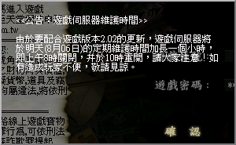

|
2003年8月5日
香港伺服器將在明天更新2.02版本

官方的更新內容如下，當中並沒有提及會更新50級任務：
新手村更新
1. 新手村的等級限制變更為12， 12級以下的角色皆可進出新手村。
2.
增加各職業的新手道具，新手村怪物會以一定機率掉落道具。各玩家角色可將新增道具與其他物品（如水果）賣給商人喬漢及佛朗。
3. NPC佛朗與喬漢會收購以下物品，其價格如下：
物品 價格
水果 1金幣
新手道具之盔甲 10金幣
其他新手道具 5金幣
4. 新增NPC免費為玩家提供加速術，魔法可持續約30分鐘左右，其效果無法累積，所以玩家不需重覆接受多次魔法。
5. 設有治療師為玩家恢復HP與MP，玩家在新手村內回復HP/MP的速度會自然提升。
6. 角色在新手村死亡後再重新開始遊戲時，其HP會自動恢復。
7. 木人場的HP往下調整，因此在此練功升級變得更容易。
8.
新手村的怪物產生速度往上調整，部份高級怪物的攻擊力被弱化。
9.
在新手村地圖上可確認木人修練場與地監位置。
其他更新
1.
增加精靈水晶【魂體轉換】掉落的機率。為維持遊戲的平衡及公平性，魔法施法前之延遲時間變更為約10秒。
2.
變更亞丁教堂【聖使阿卡塔】的位置，玩家角色再不需在【聖使阿卡塔】面前求婚。只要角色站在教堂中央壇前，即可舉行婚禮。
3.
調整說話之島商人潘朵拉所售賣的【解除咀咒的卷軸】價格。
4. 提昇召喚精靈及召喚強力精靈行走的速度。
5. 修正30級試煉時，相關怪物出現異常的現象。
6. 修正了使用Windows XP創造血盟時產生的文字錯誤部份。
7.
透過個別村莊的傳送師可傳送至亞丁城，燃柳村除外。
8. 在遊戲中，如不願意接受信件，可以使用指令
/mail on 或 off
來開啟或關閉郵件接收功能。請在遊戲選項指令確認自己的角色狀態，以免收取不想收到的信件。
9. 修正了一些地圖與文字上的錯誤。
10.
說話之島及銀騎士村莊的競技場由戰鬥區域變更為安全區域。
11. 修正了45級騎士之試煉怪物【巨人守護者】會攻擊邪惡玩家的問題。
12. 增加了'/決鬥' 指令：
- 雙方角色在相對的狀態下，其中一名玩家使用 /決鬥
指令時，就可要求決鬥，對方若果同意，決鬥就可開始。
- 決鬥是雙方同意下進行的正當PvP，因此決鬥並不會增加玩家的PK
count，也不會受到警衛的攻擊，但雙方如果在決鬥途中被第三者介入，第三者會受到警衛的攻擊。
-
角色如在決鬥中死亡，會被扣減經驗值，但並不會掉落道具。
-
角色如在決鬥途中死亡、重登遊戲、使用瞬間移動卷軸(魔法)或移動到其他地圖，都會被視為在決鬥中戰敗。
13. 52級玩家角色使用召喚控制戒指時，能夠召喚的魔狼數量會依以下魅力值計算：
魅力值 召喚魔狼數量
8~10 約1隻
11~17 約2隻
18~ 約3隻
14. 透過NPC商人查詢稅金時，可同時查詢城堡稅率與村莊稅率，其顯示格式為城堡稅率(村莊稅率)。
15.
為保持村莊的清潔及美觀度，村莊會增加動物。
16.
盟戰的結果不會在公頻作出廣播，只有所屬血盟的玩家才可得知戰果。
17. 擁有城堡的王族變更為無法向其他血盟宣戰。
18.
在進行交易時，如果對方取消交易，角色自己的交易視窗亦會消失。
韓國測試伺服器檔案內容
最近韓國測試伺服器加入了以下圖示，應該是特別活動的相關道具：
| 圖示 |
名稱 |
|
魔力的碎片 |
|
禁斷的魔法書 |
|
黑暗種子 |
|
光明種子 |
|
巨大黑暗種子 |
|
巨大光明種子 |
|
銅種子 |
|
銀種子 |
|
金種子 |
當中魔力的碎片及禁斷的魔法書是日本伺服器最近推出的活動，玩家可以收集這兩個道具來換取一些珍貴的道具 |